Wake Me is a psychological narrative game built collaboratively in Unity that transforms cleaning mechanics into a metaphor for guilt, burnout, and loss of control. The player explores fragmented domestic spaces inside the mind of a character who has fallen into a coma after a household accident. As the player cleans, the environment slowly becomes unstable, turning ordinary tasks into emotionally uncomfortable interactions. The goal of the game is not only to clean the environment, but to gradually unfold the story and understand what happened to the character exploring different spaces and observing details.
The project began with a simple question: What happens when a task normally associated with control and order becomes impossible to complete?
I explored how familiar maintenance behaviors could be recontextualized to create discomfort, tension, and emotional instability instead of satisfaction. Rather than reinforcing progress through traditional gameplay rewards, the system gradually disrupts the player’s sense of control using repetition, sound, pacing, and environmental resistance.
I led narrative development, environmental storytelling direction, 2D visual assets, audio direction, and the design of the game’s introductory experience. I also collaborated closely with other environment artists, programmers, animators, and technical artists to help align the tone of the game across mechanics, visuals, and sound.
The development of Wake Me began with early narrative sketches and story mapping, which helped us define the emotional progression of the game and how the story would gradually unfold through interaction.
We then created storyboards to visualize key moments, transitions, and player interactions before developing them inside Unity.
Over six weeks of development, we continuously playtested the game and refined the experience based on player behavior and feedback. These sessions helped us evaluate pacing, interaction clarity, environmental cues, and whether the intended emotional tension was being communicated effectively.
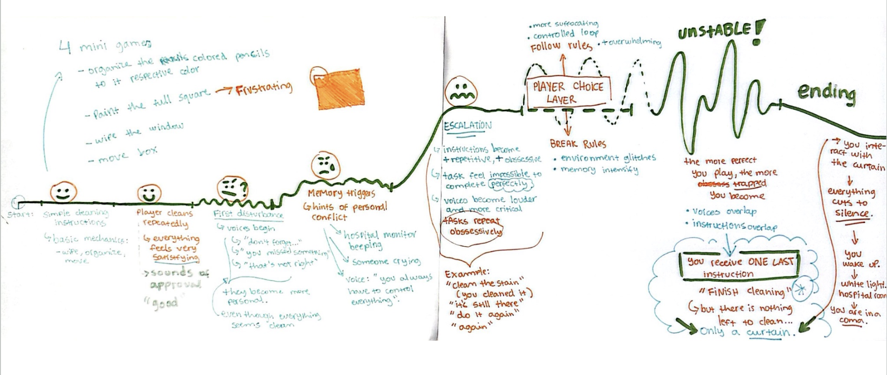
Story Development
Early sketches exploring the storyline, environment, and emotional progression of the game.
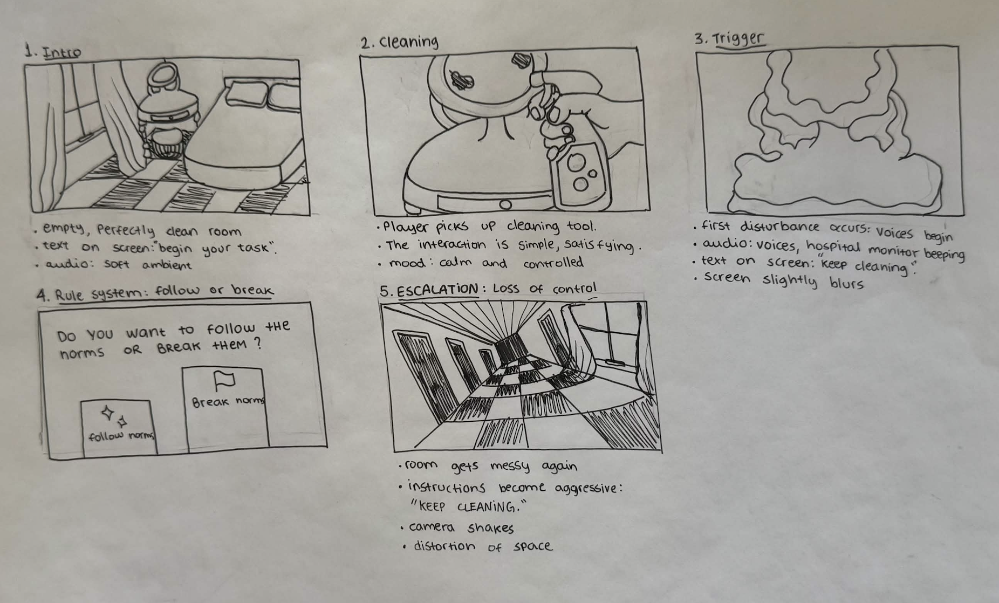
Storyboard
Visualizing key moments, transitions, and interactions before developing them in Unity.
Playtesting
Observing how players understood the interactions, pacing, and environmental cues.
Iteration
Refining the experience through repeated testing and feedback throughout development.
Wake Me deepened my understanding of how interaction systems themselves can communicate emotion without relying heavily on explicit narrative exposition. The project deepened my interest in storytelling, environmental narrative, and designing experiences that use interaction to shape emotional perception.
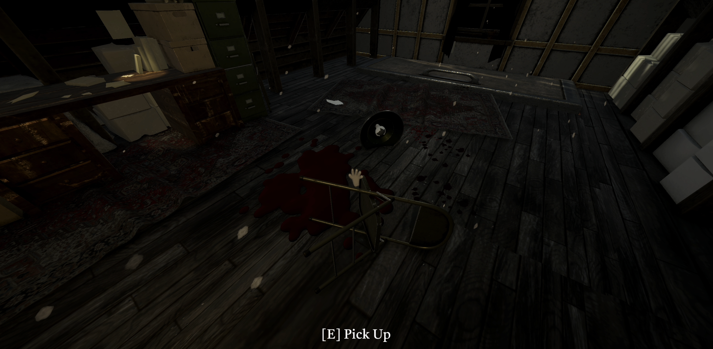
Scene 1
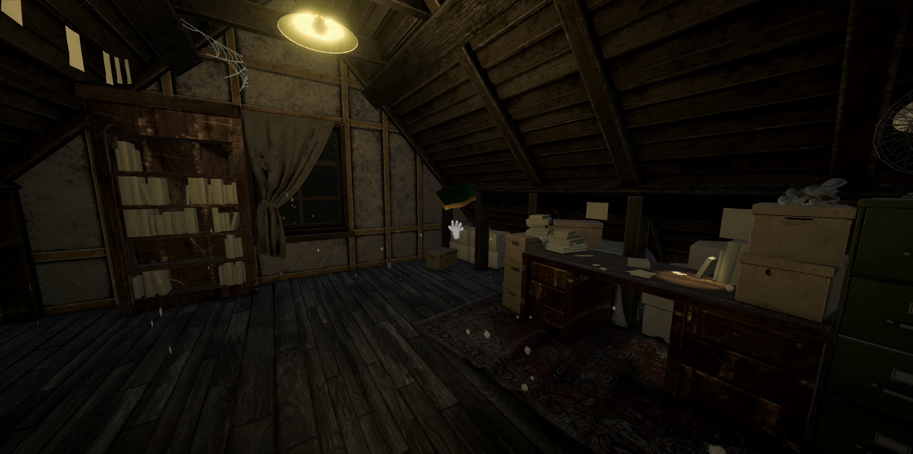
Scene 2
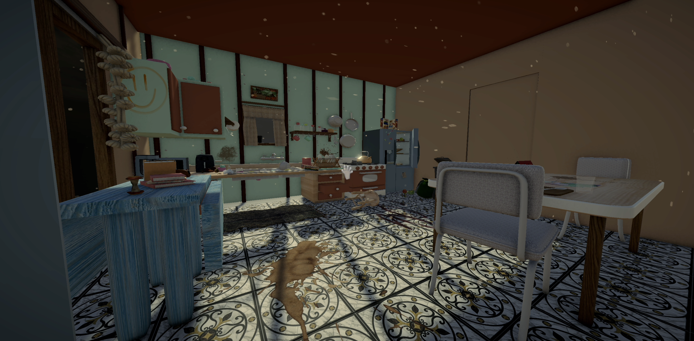
Scene 3
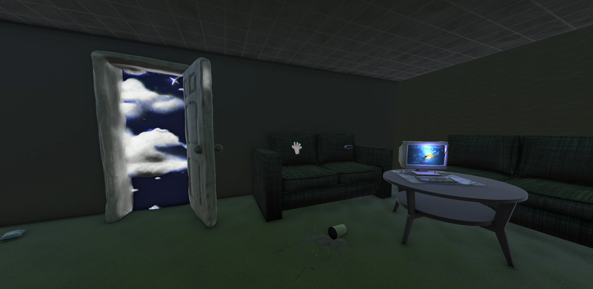
Scene 4
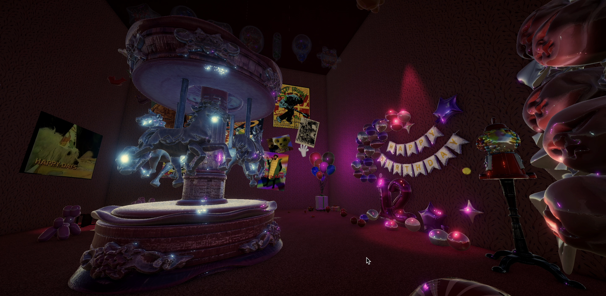
Scene 5
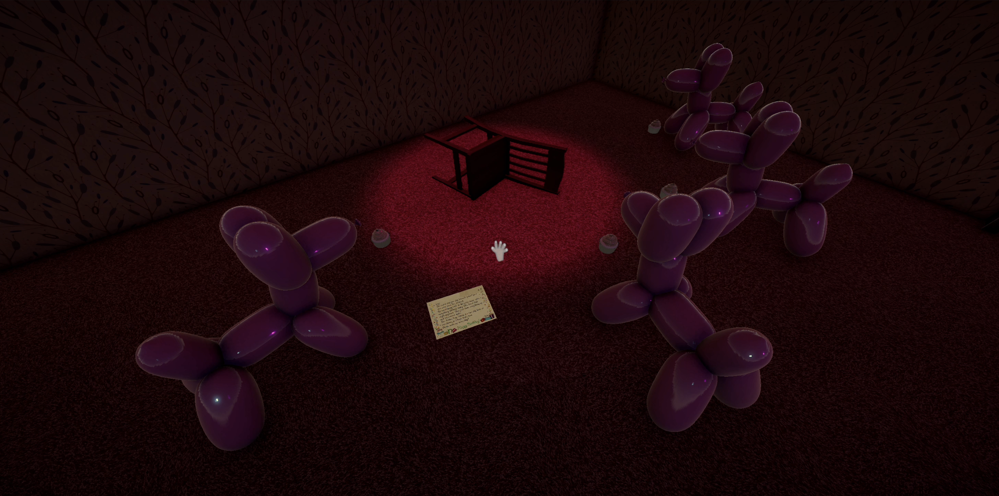
Scene 6
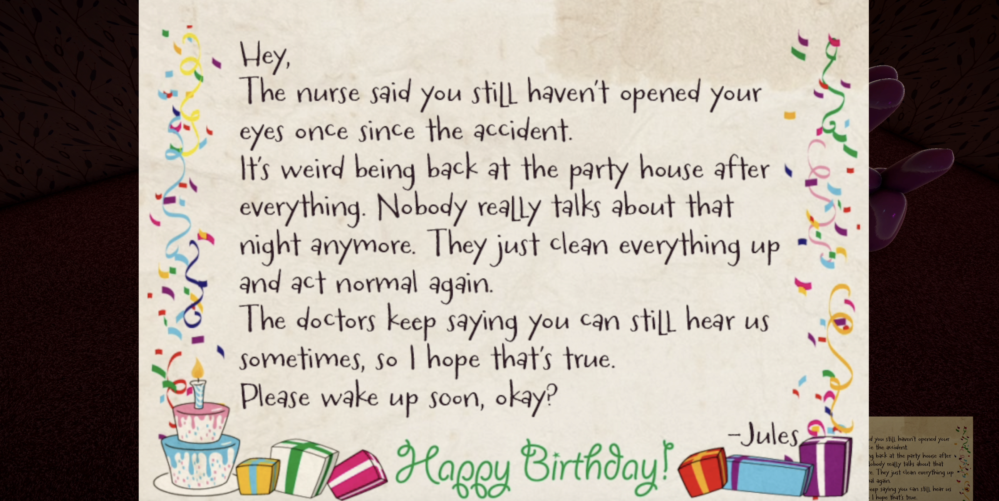
Scene 7
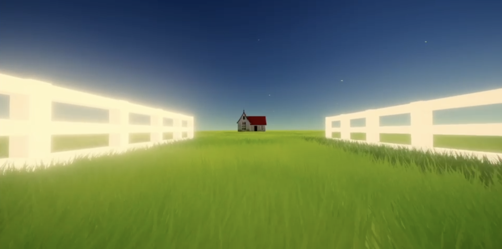
Scene 8
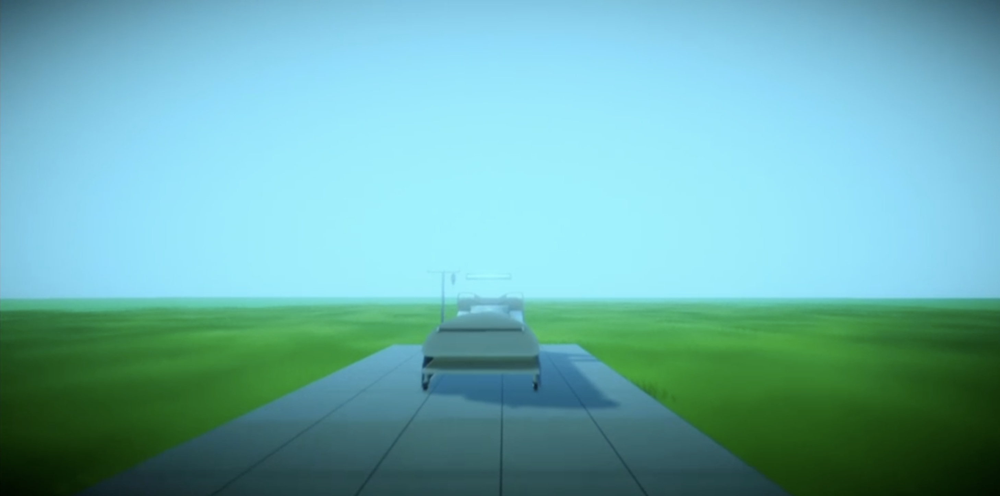
Scene 9